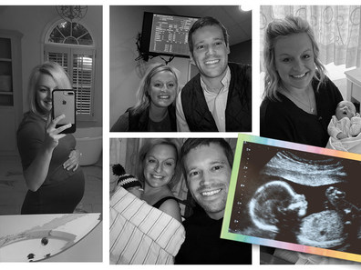

Your Life
Your pregnancy will change your life in ways big and small – from how you work and travel to how you dress. Pregnancy travel requires more planning, and working while pregnant may be a challenge due to pregnancy symptoms like nausea and fatigue. We have tips on coping with the rollercoaster of pregnancy emotions and information on handling depression during pregnancy if it crops up. And we haven't forgotten about maternity clothes: We'll explain the secrets of maternity fashion and how maternity clothes sizes work.
Travel
Traveling while pregnant: Your complete guide
-
* Is traveling while pregnant safe?
Yes ,Travel during pregnancy is generally safe if you're not close to your due date or experiencing complications. Consult your doctor, avoid high-risk destinations, and be mindful of activities.
Flying is usually fine until around 36 weeks domestically; check with your doctor and airline for international travel. -
* When to avoid pregnancy travel
1. Avoid travel during pregnancy if you have life-threatening conditions like placental abruption, preeclampsia, or are in preterm labor.
2. Consult your doctor before travel if you have other high-risk conditions such as intrauterine growth restriction or placenta previa for personalized advice. -
* When to call your doctor while traveling
1. Call your doctor immediately if experiencing symptoms like vaginal bleeding,
signs of pre-term labor,
ruptured membranes,
severe cramping,
high blood pressure,
severe nausea or vomiting,
or COVID-19 symptoms while traveling or at home.
2. Prompt medical attention is crucial for ensuring the safety of both mother and baby during pregnancy.
Does pregnancy make me prone to motion sickness?
-
* "Understanding the Connection Between Motion Sickness and Morning Sickness in Pregnancy"
YES , Motion sickness during pregnancy, similar to morning sickness, is common, especially for those with a history of motion sickness.
Strategies like sitting in the front seat, choosing a stable seat location, and snacking lightly before travel may help alleviate symptoms. Acupressure wristbands may offer relief, but their effectiveness is inconclusive. -
* Can I take medications for motion sickness during pregnancy?
To get relief from motion sickness
1. Over-the-counter drugs like dimenhydrinate (Dramamine) or diphenhydramine (Benadryl) can provide relief from motion sickness during pregnancy, but consult your doctor first.
2. Avoid combining Dramamine and Benadryl, and discuss any prescription medications like scopolamine (Scopace) with your healthcare provider to assess potential risks and side effects during pregnancy.
What should I do if I'm in a car accident while I'm pregnant?
-
* Importance of Immediate Medical Evaluation and Post-Trauma Care"
1. After a car accident during pregnancy, seek immediate medical evaluation, even if you feel fine, to assess for potential injuries, particularly placental abruption.
2. In the ER, you'll undergo examinations and monitoring, including obstetric exams and ultrasound, to ensure the well-being of both you and your baby; watch for symptoms like vaginal bleeding or decreased fetal movement afterward and seek medical attention if they occur. -
* Safety tips for driving while pregnant
1. Wear seat belt properly to prevent placental abruption.
2. Avoid distracted driving.
3. Ensure functional airbags and maintain safe distance from steering wheel.
4. Carry emergency contact info.
5. Consider pregnancy ID bracelet with medical details.
Work & Career
Paternity leave: A guide for fathers and partners
-
* What is paternity leave?
1. Paternity or partner leave allows fathers/partners to bond with their child and support the mother, fostering more equal division of parental responsibilities.
2. Studies show benefits include improved bonding, reduced emotional strain for mothers, but the lack of a national paid family leave policy in the U.S. remains a challenge. -
* How common is paternity leave?
-Challenges such as fear of job repercussions, financial concerns, and societal perceptions hinder paternity leave uptake, but evolving attitudes and policy changes are promoting inclusivity and encouraging more fathers to take time off for family.
-
* How to prepare for paternity leave
1. Consult your company's HR department early on to discuss leave options and give at least 30 days' notice for FMLA, considering whether to take leave simultaneously or staggered.
2. Create a transition plan for colleagues, seek advice from coworkers who have taken paternity leave, and prioritize being present with your partner and new baby while sharing caregiving responsibilities and supporting your partner's recovery.
Maternity leave: A guide for expecting moms
-
* What is maternity leave?
1. Maternity leave is crucial for mothers to recover, adjust, and bond with their newborns, with studies linking it to improved health outcomes for both mother and baby.
2. Despite benefits, the U.S. lacks a federally mandated paid family leave policy, highlighting the need for legislative action to support new parents. -
* How long is maternity leave?
1. Maternity leave duration varies based on available benefits and financial circumstances, ranging from a few days to up to a year, with the average in the U.S. being around 10 weeks.
2. Despite FMLA offering up to 12 weeks of unpaid leave, many U.S. employees don't qualify or can't afford to take the full duration, leading to shorter maternity leaves, sometimes as brief as a few days or weeks. -
* How does maternity leave work if I'm self-employed?
1. Self-employed individuals can opt for maternity leave with a private disability policy covering pregnancy and postpartum, alongside health insurance.
2. Plan finances, communicate with clients about leave, and explore short-term disability options.
Maternity leave: A guide for expecting moms
-
* Can you work while you're pregnant?
1. Most pregnant women can continue working, but adjustments may be necessary for strenuous jobs or exposure to harmful chemicals; understanding workplace rights and modifying tasks are essential.
2. Physical modifications, breaks, and communication with healthcare providers are key for managing pregnancy symptoms and ensuring a safe work environment. -
* Complications that might prevent you from working while pregnant
1. Pregnancy complications such as preterm labor risk, high blood pressure, placenta previa, or intrauterine growth restriction may require reduced work hours or stopping work entirely.
2. Depending on severity, doctors may prescribe pregnancy bed rest to manage complications, potentially inducing stress and anxiety that can lead to further complications. -
* How to handle pregnancy and work
1. Notify HR of your pregnancy and explore maternity leave policies, considering additional family leave benefits.
2. For morning sickness, prepare an office kit, consider sharing your pregnancy earlier for severe cases, and discuss accommodations with your boss.
3. Pregnancy shouldn't hinder job performance; seek support from colleagues and take needed breaks.
4. Discuss travel plans with your healthcare provider, carry medical records, and consider COVID-19 travel policies.
5. Seek advice from experienced colleagues regarding maternity leave, productivity, and work-life balance, and inquire about flexible work arrangements. -
* How to stay comfortable at work during pregnancy
1. Take breaks to rest and move around.
2. Stretch to ease back pain.
3. Wear comfy clothes and shoes.
4. Stay hydrated and eat balanced meals.
5. Adjust your workspace for comfort.
6. Manage stress with relaxation techniques.
7. Prioritize health without guilt.
8. Accept help from co-workers.
Emotional Life

How I managed my anxiety during pregnancy after miscarriage and loss
-
* The mental impact of previous pregnancy losses on healthy pregnancies
Experiencing pregnancy loss can lead to ongoing anxiety in future pregnancies, despite the low likelihood of recurrence. This emotional impact highlights the need for greater support and understanding for individuals facing challenges in conceiving and carrying a child.
"Once you've experienced a pregnancy loss, the chances of having another miscarriage is just five percent, but that five percent may always be top of mind." -
* Signs of anxiety in pregnancy after loss
Experiencing anxiety during pregnancy is common, often manifesting as constant worry about the baby's well-being.
Symptoms may include intrusive thoughts, changes in sleep patterns, racing heartbeat, and physical discomfort. -
* Its okay to not feel okay
Experiencing mixed emotions during pregnancy after a loss is normal, but seeking support from loved ones and healthcare providers can help manage anxiety.
Despite challenges, there's hope for a brighter outcome, as illustrated by personal stories of resilience and eventual joy.
Tired of being pregnant? You're not alone
-
* Is it normal to feel tired of being pregnant?
YES ,It's normal for women to grow tired of pregnancy as it progresses, facing discomfort and inconvenience, such as frequent urination and physical changes, which can overshadow the initial excitement.
-
* Tips for dealing with feeling tired of being pregnant
1. Redirect conversations away from pregnancy-related topics.
2. Find support from other expectant mothers.
3. Make the most of the time before your baby arrives by focusing on preparations and self-care.
4. Be honest about your feelings and seek professional help if needed.
- * Fun things to do when you're pregnant and bored
1. Schedule lunch or phone dates with friends for post-baby catch-ups.
2. Expand your knowledge by exploring new books or hobbies.
3. Declutter and organize your living space for a stress-free environment.
4. Treat yourself to a prenatal massage or other self-care activities.
5. Prepare for post-baby life by setting up time-saving shortcuts like freezer meals.
6. Stay active with doctor-approved exercise routines like walking or prenatal yoga.
7. Engage in gardening to stay occupied and create a backyard retreat.
8. Strengthen your relationship with your partner through quality time and romantic gestures.
Depression during pregnancy
-
* When should I be worried about pregnancy depression?
If persistent boredom or anxiety during pregnancy affects your functioning,
- consult your healthcare provider as it could indicate depression. Symptoms include trouble concentrating, changes in eating and sleeping patterns, and feelings of worthlessness.
- Untreated depression can impact prenatal care and baby's health, so seek support from a therapist or consider medication if necessary. - * Depression during pregnancy quiz
Beauty & Fashion
Safe skin care during pregnancy
-
* Are there skin products that I should avoid during pregnancy?
1-Retinoids
2-Hydroxy Acids
3-Acne products
4-Hair removers & minimizers
5-Sunscreens
6-Makeup
7-Steroids
learn more here...
Maternity photoshoot ideas and tips
Cute maternity clothes ideas for every pregnancy body type
-
* Dressing for Every Body Shape
1-If you're curvy or plus-size and pregnant
2-If you're carrying low
3-If you're carrying high
4-If you're petite and pregnant
YOUR GUIDE HERE
- * Fun things to do when you're pregnant and bored